目前里面提到的很多东西我自己也不太懂，不过先记下来，用到的时候也知道去哪找。
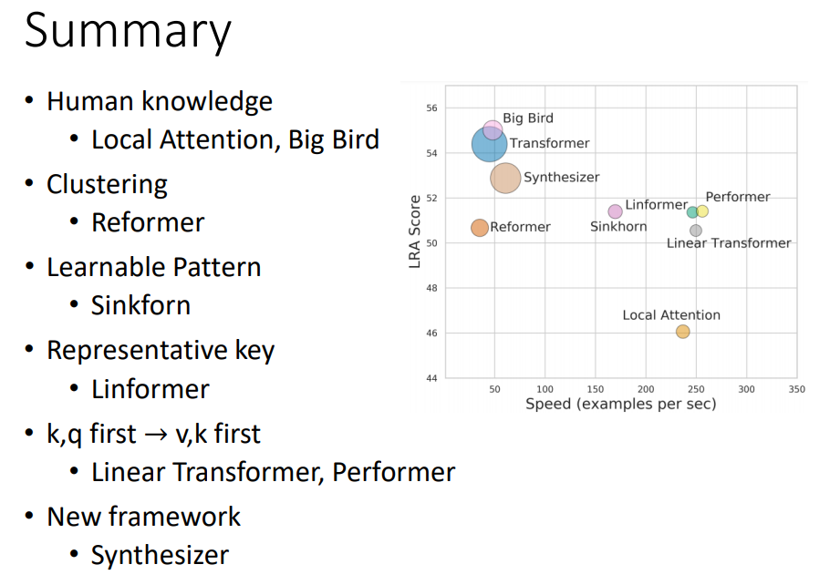
注：
- 横轴：运行速度
- 纵轴：表现
- 圆圈大小：内存占用
Transformer的局限#
Transformer的一大局限是其运算效率，对于有N个vector的序列，由于每个query都需要和key作点积，那么就需要做
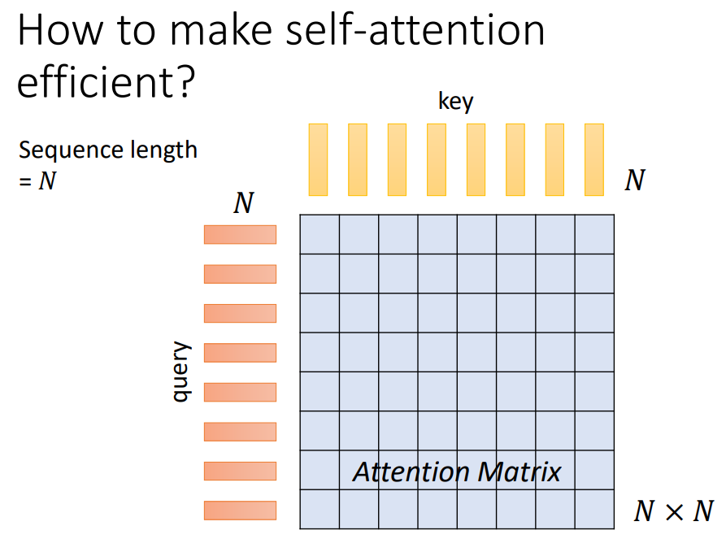
Human Knowledge#
Local Attention / Truncated Attention#
在一些问题中，一个vector只需要把注意力放在临近的vector上，那么就可以使用Local Attention / Truncated Attention，只计算attention matrix中对角线临近区域的部分，其他设为0。这样的操作其实和CNN是类似的。
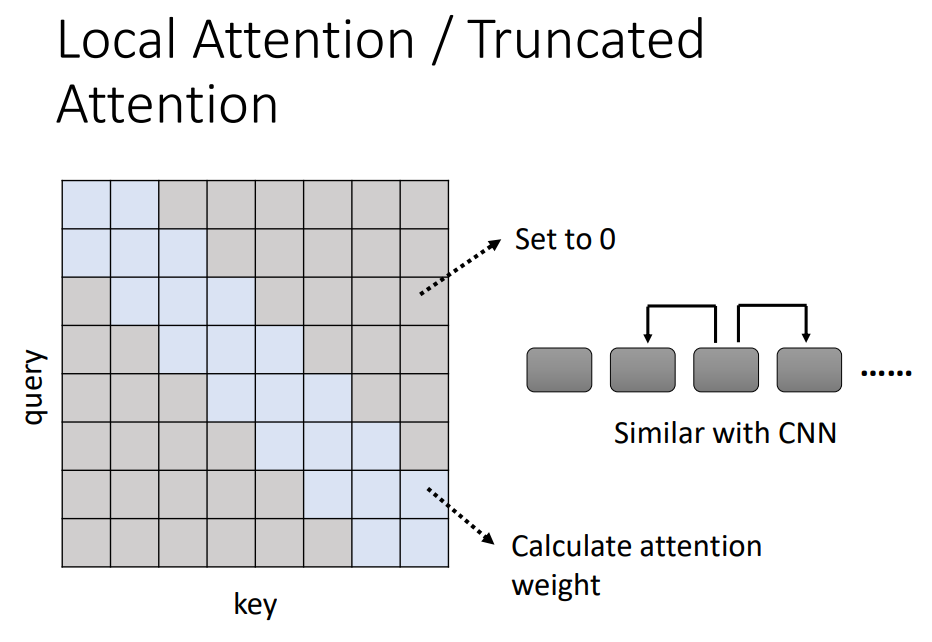
Stride Attention#
如下图所示，每一个vector只关注与其一定间隔的向量，这个间隔是一个超参数。
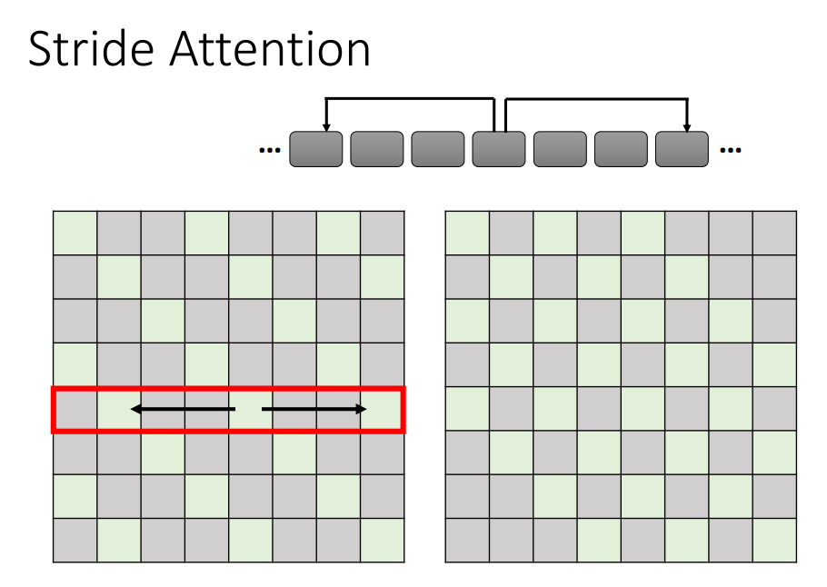
Global Attention#
Global attention是取出special token，然后用special token作为query、key和所有token计算attention。
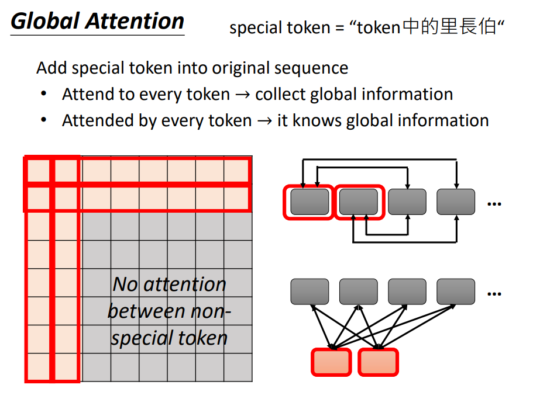
实际上我们有时会采用多种注意力机制进行结合，如下图所示。
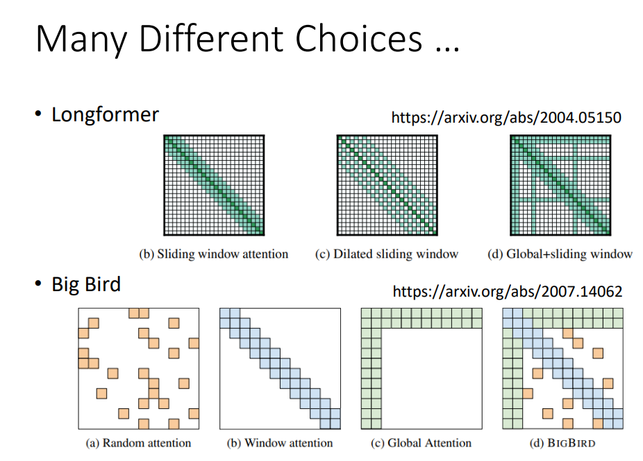
Clustering#
Clustering方法是指把query和key进行聚类，然后只计算相近的query和key之间的attention，而差距较大的query和key之间的attention score被设置为0。
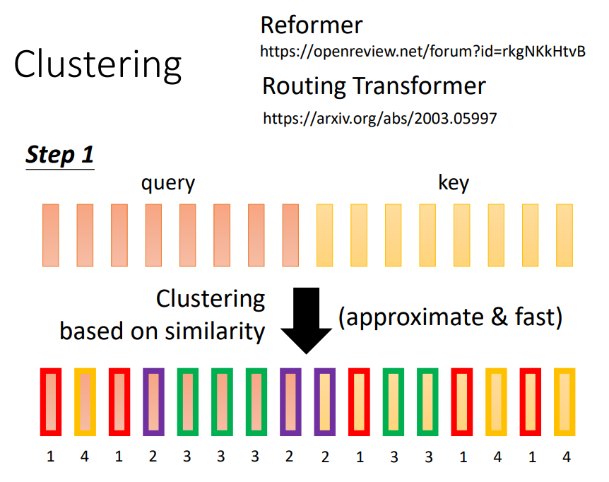
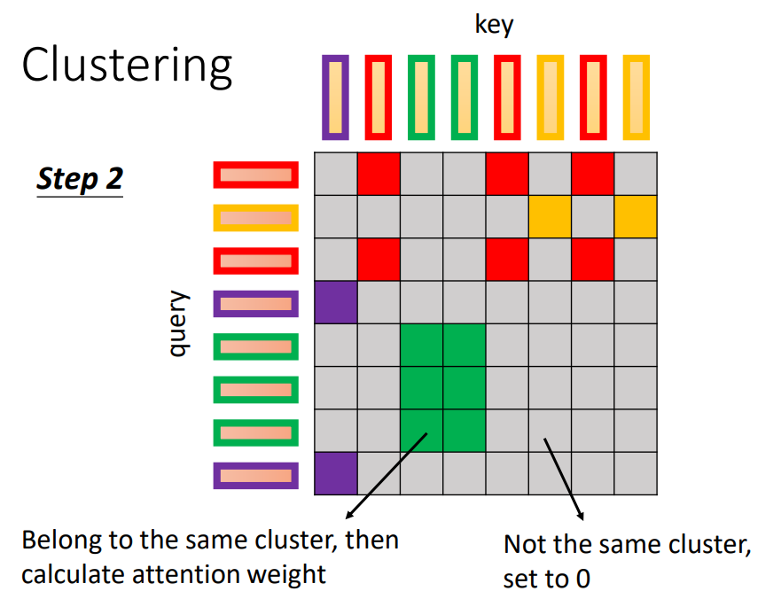
Learnable Patterns#
在之前的方法中，我们还是依赖人对于问题的理解去判定哪些attention score是需要计算的，但是其实可以让模型自己学习出哪些attention score是需要计算的。
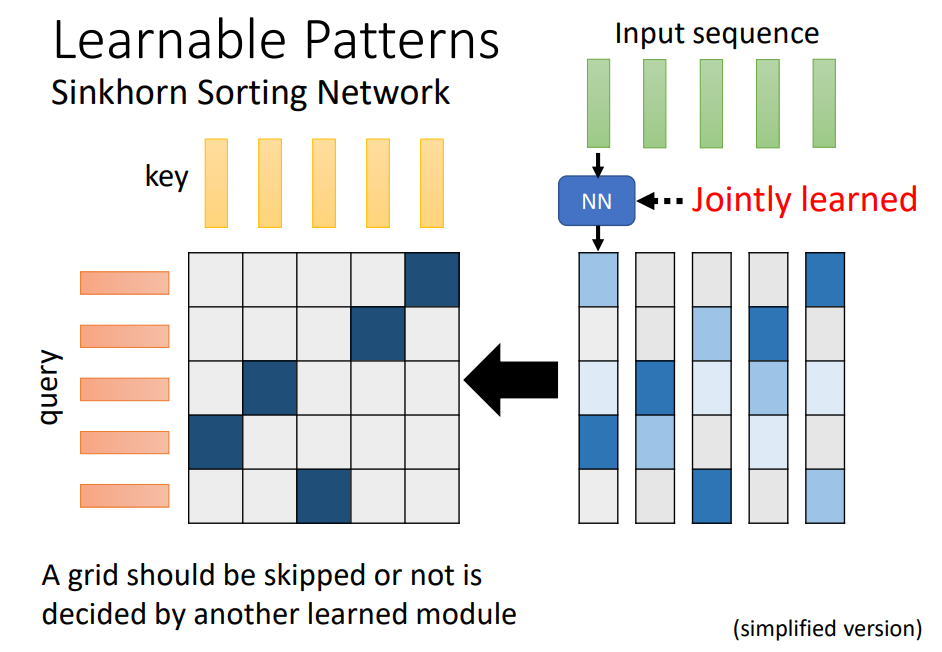
Representative key#
因为attention map通常是低秩的，所以可以用有代表性的向量代表V、K（低秩近似），以减少运算量。

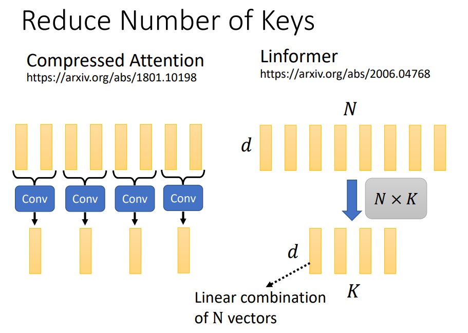
k,q first → v,k first#
先计算value和key的积可以使得运算量降低，从而加速transformer运算。
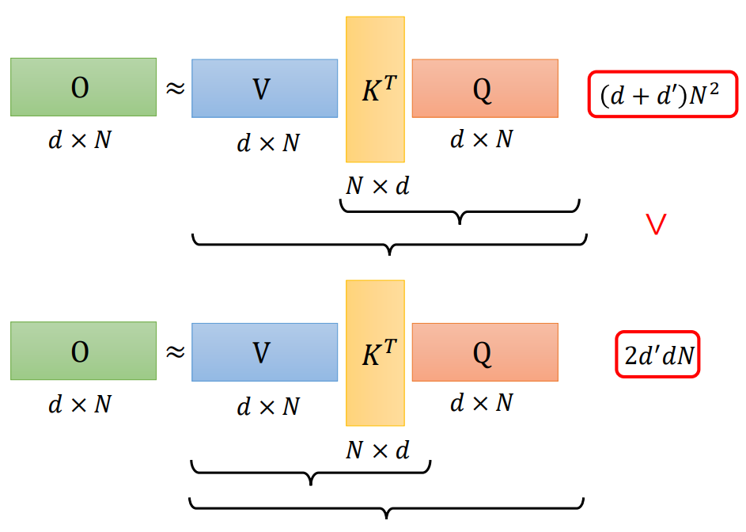
对于不同的query，value和key的积是相同的，所以可以把
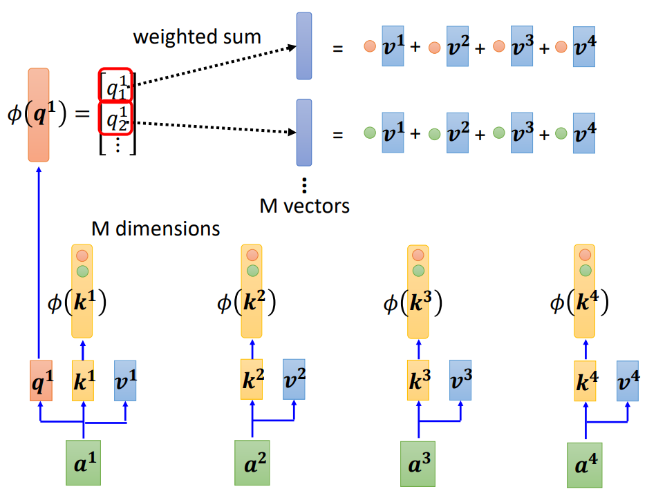
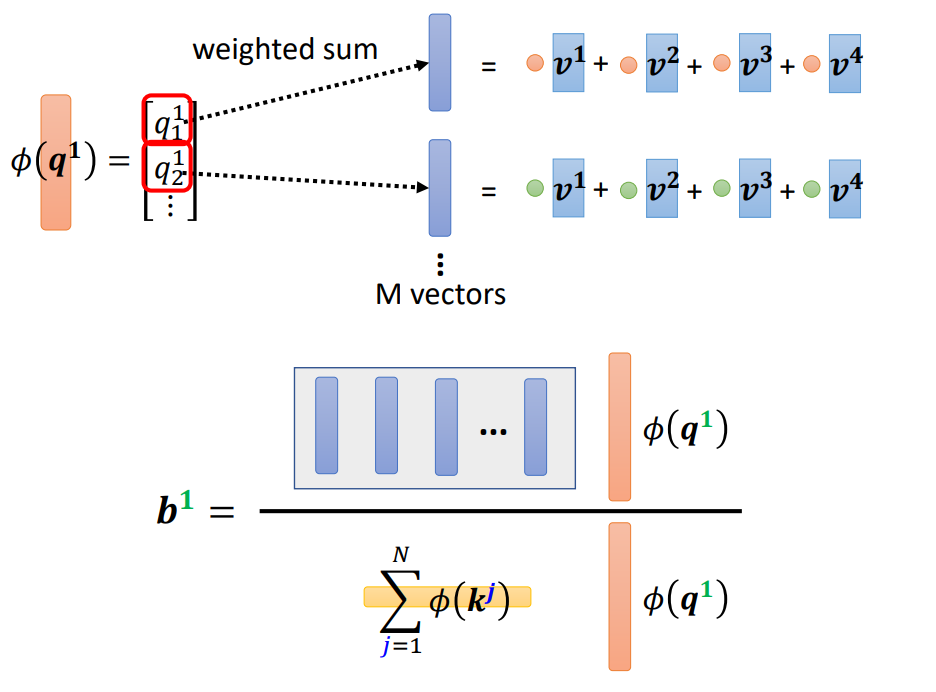
New framework#
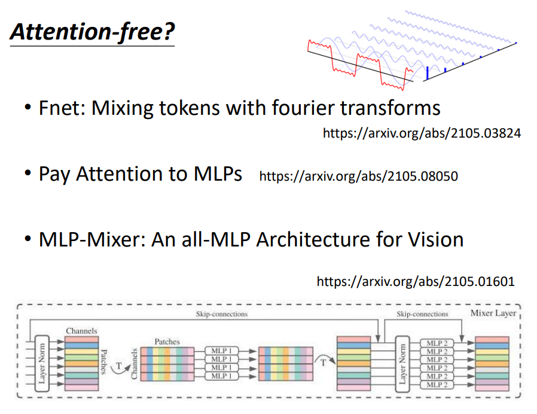
作者: 核子